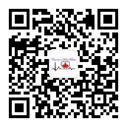

你好，我叫赵宇彤。一个90后的阳光男孩，来自河北省廊坊市。
兰州大学与加拿大曼尼托巴大学双学士，加拿大曼尼托巴大学硕士。
光学通讯工程师。曾经在放射医学物理、量子信息处理等领域发表过学术文章。
如感兴趣，请移步：
谷歌学术-Yutong Zhao曾踏足过中国(22省)、加拿大(10省)、美国(6州)、古巴、日本。
摄影
微信个人公众号:
曾生活城市(>半年)：廊坊、兰州、温尼伯、蒙特利尔、渥太华。 我喜欢公路旅行，2016年起获得驾驶资格，至今驾驶里程已逾17万公里。 单板滑雪(高级道)、双板滑雪（中级道）。 流星雨、火流星、北极光。 2级溶洞探险。 徒步、爬山、攀岩、露营。用自己的双脚丈量世界。 博物馆、。
加拿大机动船驾驶员(会看海图,航行小时数~40)。 2.5HP动力独木舟、5人钓鱼船、10人浮排船。 桨板-SUP、皮划艇 Kayak、独木舟 Canoe。 海钓。
亚洲太平洋海岸
北美洲太平洋海岸
北美洲大西洋海岸
北美洲北冰洋海岸
会开飞机(驾驶过塞斯纳172飞机，飞行小时数3)。
我还要感谢之前经历过的种种不公平， 这些经历教会了我公平正义的可贵。综合之前的种种经历，我想感谢这个时代，海阔凭鱼跃，天高任鸟飞。
你可以在这里找到我的 简短版的 个人简历。
以及 一份并不简短的个人简历。
非专业不友好的 物理科研之路。
探索进一步的细节 我的旅行。
移民相关的 枫叶卡之路。